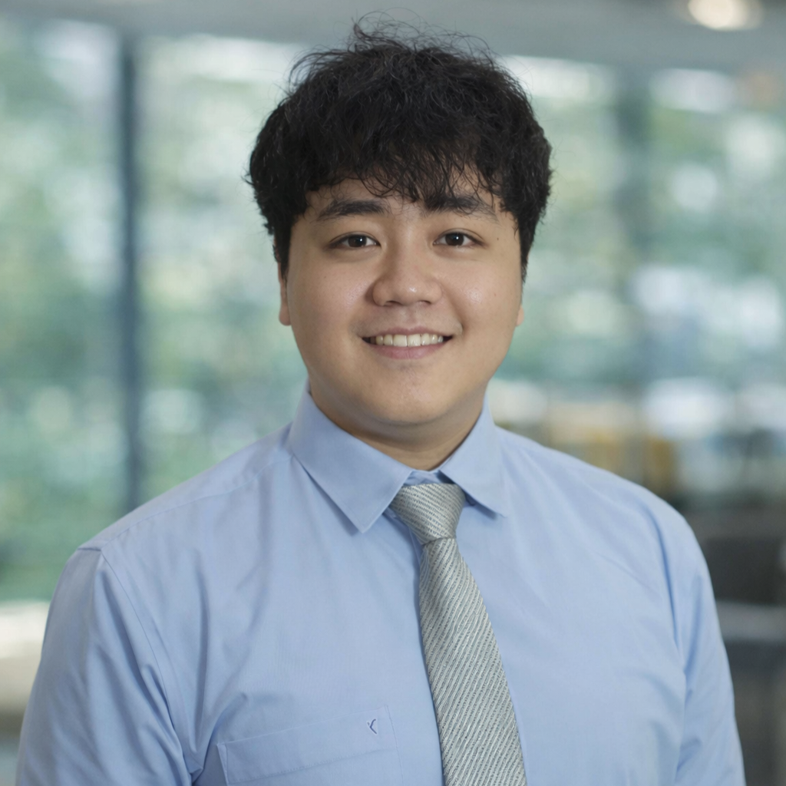

AI Engineer · Telkom Indonesia
Novebri Tito
Ramadhani
AI Engineer at Telkom Indonesia, building production ML systems across NLP, computer vision, and tabular data. Led development of MARSHALL — a learning module automation platform serving 1,406 corporate employees, with a RAG pipeline that improved response factuality from 20% to 90%. Also built a face recognition system (98% accuracy) and avatar generation pipeline cutting manual editing time by 50%.
Mechatronics Engineering student at Yogyakarta State University (GPA 3.73). Former Lead Programmer at UNY Robotics — 1st Runner-up at FIRA Air SimulCup 2022 and KRTI Regional 2023. Certified TensorFlow Developer. Bangkit Academy alumni.
Checkout my CV here!!